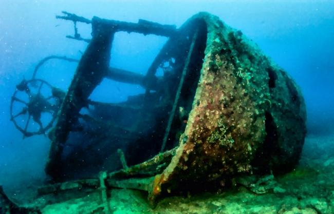
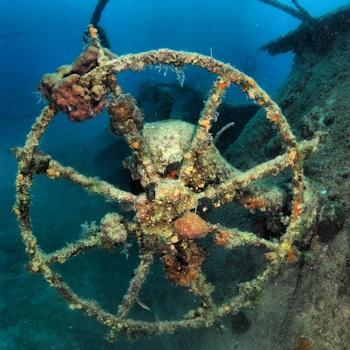
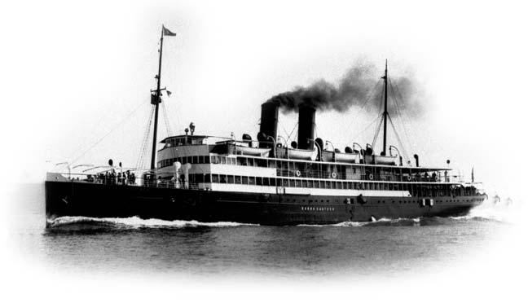

Titanic


Mindannyian hallhattunk már a Titanic történetéről, és bizonyára sokan láttuk a filmet is. A Titanicot egy óceánjáró hármas második hajójaként tervezték „testvérhajóival” heti három járat kiszolgálására és a transzatlanti forgalom dominálására, a White Star Line társaság számára. Az előbb elkészülő Olympic és a Titanic teljesen azonos méretekkel rendelkeztek, ugyanazon tervek alapján készültek. A Titanic fedett sétafolyosói megnövelték a hajó hivatalos bruttóregisztertonna értékét 1328 tonnával, így az azonos méretek melletti nagyobb befogadóképesség miatt reklámozták a világ legnagyobb hajójaként. Később az Olympicot is átépítették, amivel további 100 BRT-növekedést értek el, így ismét az Olympic lett a legnagyobb óceánjáró. 1912. április 14-én, vasárnap 23:40-kor a hajó jéghegynek ütközött, és április 15-én, hétfőn 2:20-kor, az ütközés után alig több mint két és fél órával, kettétörve elsüllyedt. A Titanicot a konkurens Cunard Line hajózási társaság két óriáshajója, a Lusitania és Mauretania vetélytársának szánták. A Titanic és „testvérhajói”, az RMS Olympic és a HMHS Britannic lettek a leghosszabb óceánjárók, amelyek egyben a legnagyobb luxussal is szolgáltak.
| Információk | |
| Hossz: | 269 m |
| Szélesség: | 28 m |
| Merülés: | 10.5 m |
| Összsúly | 46328 t |
| Sebesség: | 44.4 km/h (24 csomó) |
| Legénység: | 885 fő |
| Férőhelyek száma:: | 3547 fő |
Baron Gautsch
Északról délre haladva az Isztriai-félsziget egy olyan pontja az Adriának, ami a roncskedvelők körében igazi paradicsomnak számít. Mind az első, mind a második világháború idején vesztek oda hajók ezen a partszakaszon. A leghíresebb a Baron Gautsch nevű személyszállító hajó volt, amit "Az Adria Titanicja" néven is szokás emlegetni. A 85 méter méter hosszú hajó 1914-ben veszett oda, 40 méteres mélységben nyugszik.
  EDRO III – Páfosz
Páfosz városától egy kellemes, kb. 30 perces tengerparti kocsikázás után, a tengeri barlangoknál (Sea Caves) és egy banánültetvény szomszédságában találhatunk rá az EDRO III hajóroncsra. A hajó eredetileg albán tulajdonban volt, Sierra Leone-i zászló alatt közlekedett és 2011. december 7-én futott zátonyra. Szerencsére a balesetben senki sem sérült meg és semmilyen természeti katasztrófa nem következett be. Az elmúlt 7 évben nagyon közel sodródott a parthoz, de kivontatása olyan sokba kerülne, hogy inkább ott hagyták, ahol van. Így viszont nagyon szuper látványt nyújt, főleg naplementében és sokan járnak ide fotózni ezt a testes „hölgyet”.
| Érdekességek | |
| Hossz: | 80 m |
| Súly: | 2300-2500 t |
| A hajó körülbelül 12 fokos szögben dőlik a víz felé, túl költséges lett volna kihúzni a vízből ezt a roncsot, így inkább bent vagyták. így egy túrista kedvelt célpont lett, és sok ezer ember látogat el ide minden évben. | |